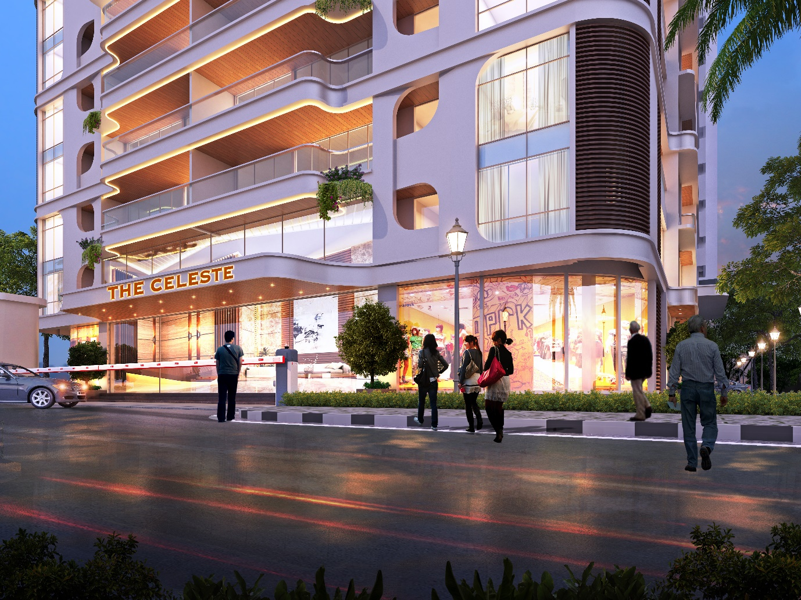

01 / Project Information
{{ row.label }}
{{ row.value }}
02 / Overview
{{ overview }}
{{ margin }}

03 / Building Features
{{ ft }}
04 / Design Concept
Concept
{{ conceptName }}
{{ concept }}
{{ pl }}
05 / Drawing Set
{{ plateCount }} Plates